În stînga este slide-ul din curs, în dreapta aceeași figură sau același tabel, calculat în browser din aceleași date. Butonul ▶ modifică parametrul pas cu pas; tabelele și exemplele lucrate se recalculează odată cu el. Abrevieri: ACF (autocorrelation function, funcția de autocorelație), VR (variance ratio, raportul varianțelor), ADF (augmented Dickey–Fuller, Dickey–Fuller augmentat), PP (Phillips–Perron), KPSS (Kwiatkowski–Phillips–Schmidt–Shin), LB (Ljung–Box), CD (Chow–Denning), OLS (ordinary least squares, metoda celor mai mici pătrate), GARCH (generalised autoregressive conditional heteroskedasticity).
Previzibilitatea prețurilor · Ipotezele mersului aleator · Zgomotul alb și funcția de autocorelație · Testarea autocorelației · Rădăcini unitare: prețuri față de randamente · Testul variance ratio · Eficiența pe piețe și în timp · Forma semi-tare, forma tare și anomalii
Previzibilitatea prețurilor
Întrebare pentru sală: care traiectorie este S&P 500?
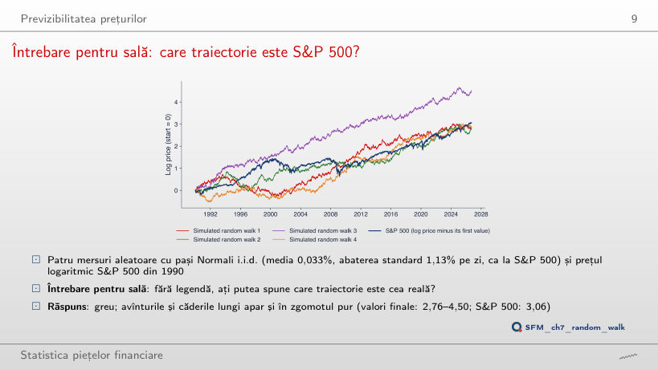
Răspuns
Trei. La sfîrșitul lui 2008 S&P 500 este la 0,91 (logaritmul prețului minus valoarea de start), iar mersurile simulate la 1,12, 1,24, 2,69 și 0,65. În septembrie 2026 doar unul (4,50) este deasupra S&P 500 (3,06). Scăderile din 2000–2002 și 2008 au mărimea episoadelor pe care le produce și zgomotul pur: o singură traiectorie nu separă S&P 500 de un mers aleator.
Randamentul de ieri și randamentul de azi
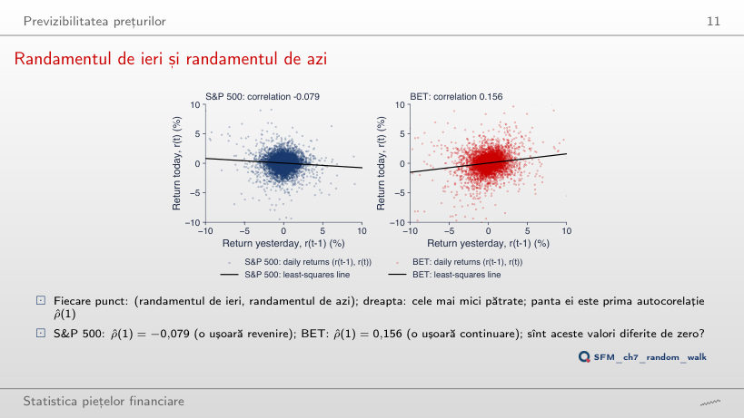
Răspuns
0,033, de aproape cinci ori mai mică; la lagul 3 este −0,008, la lagul 5 0,031, la lagul 10 0,004. Pentru S&P 500 corelația la lagul 2 este −0,004. Dependența randamentelor BET stă aproape toată la lagul 1, cum produce tranzacționarea redusă: o știre intră în indice pe parcursul a două zile.
Ipotezele mersului aleator
Exemplu lucrat: cum crește riscul cu orizontul
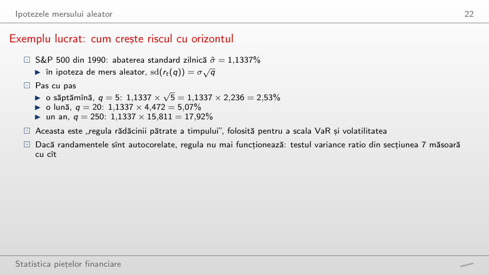
Abaterea standard a randamentelor pe q zile: regula rădăcinii pătrate și datele
Exemplu lucrat: regula rădăcinii pătrate a timpului
Răspuns
Mai mică: 15,66%, adică 0,874 din valoarea regulii. Randamentele zilnice ale S&P 500 sînt ușor negativ autocorelate (ρ̂(1) = −0,079, VR(250) = 0,785), deci mișcările zilnice se anulează parțial în timp. BET, cu ρ̂(1) = 0,156, arată efectul invers: 35,91% față de 23,38% (de 1,54 ori). Regula presupune randamente necorelate; scalarea VaR sau a volatilității cu √q moștenește această ipoteză.
Zgomotul alb și funcția de autocorelație
Zgomotul alb gaussian și ACF-ul lui de selecție
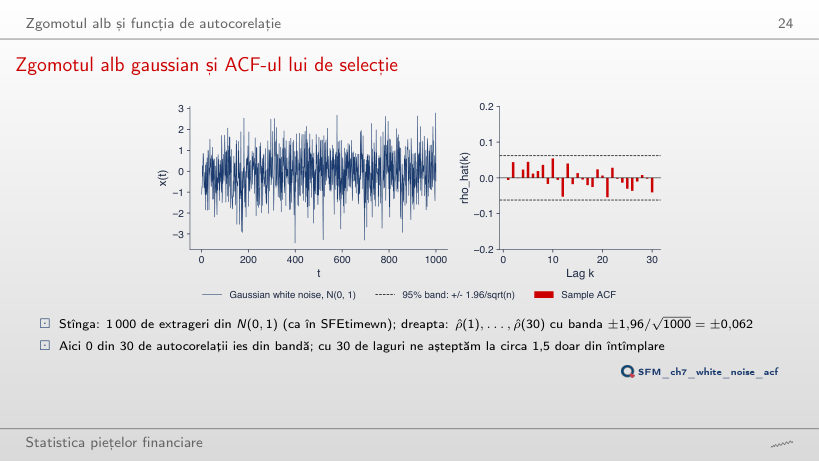
Răspuns
Una: cea mai mare în modul este 0,223. Cu 30 de laguri ne așteptăm la 1,5 depășiri doar din întîmplare, la orice n: banda se lărgește ca 1/√n, iar autocorelațiile de selecție ale zgomotului alb sînt mai mari în același ritm. La n = 400 iese tot una, la celelalte valori ale lui n niciuna.
ACF-ul teoretic și de selecție pentru șase procese
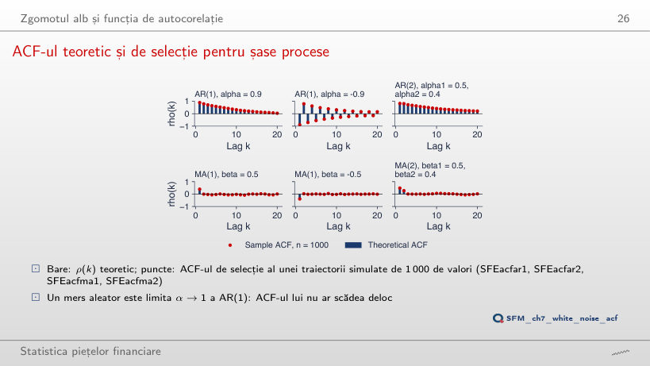
Răspuns
Pînă la 0,40 (cea mai mare abatere pe lagurile 1–20), față de 0,08 la n = 1 000. Banda zgomotului alb pentru n = 50 este ±0,28 (1/√50 = 0,14), dar abaterea este mai mare, pentru că varianța lui ρ̂(k) a unui proces persistent depășește 1/T. Pentru MA(2), abaterea maximă este 0,19 la n = 50 și 0,06 la n = 1 000.
ACF-ul randamentelor zilnice
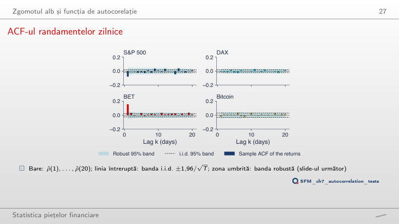
Exemplu lucrat: banda robustă a ACF-ului
Răspuns
Devine mai negativ: −0,142, față de −0,079 din 1990, cu 13 laguri în afara benzii i.i.d. și 7 în afara benzii robuste. Pe eșantionul care începe în 2022, ρ̂(1) este doar −0,015. Pe ferestre mobile (secțiunea „Eficiența pe piețe și în timp”) revenirile S&P 500 sînt cele mai puternice în crize: eșantionul din 2016 include 2020, cel din 2022 nu.
Randamentele sînt aproape necorelate, mărimea lor nu
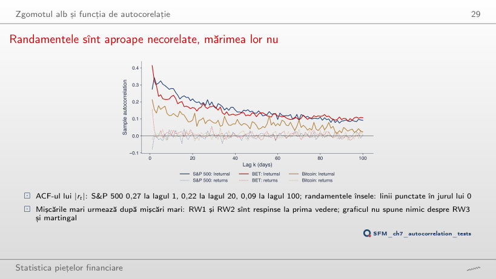
Răspuns
Scade: 0,039 pentru d = 2, față de 0,092 pentru d = 1; la lagul 1 crește puțin (0,311 față de 0,275). Puterile mari dau pondere cîtorva zile extreme, iar autocorelația lor se stinge mai repede. Pentru orice d mărimea randamentelor rămîne corelată, deci RW1 și RW2 sînt respinse.
Testarea autocorelației
Exemplu lucrat: Ljung–Box pas cu pas
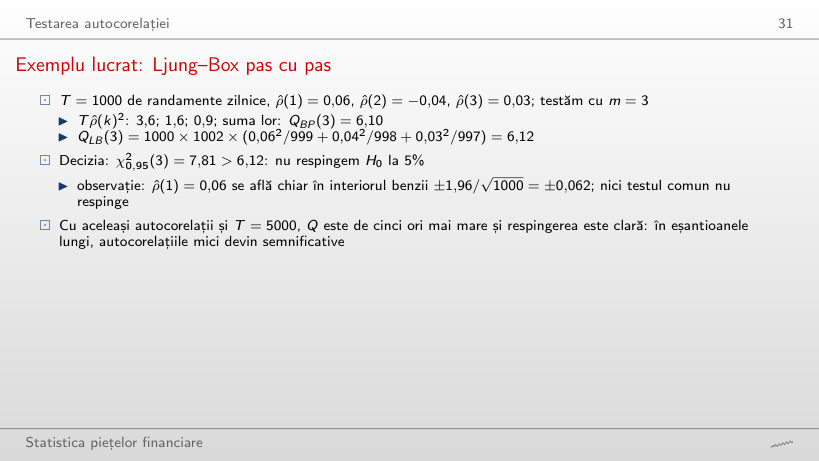
Exemplu lucrat: Box–Pierce și Ljung–Box
Răspuns
De la T = 1 500 (în pașii de 500): QLB(3) = 9,17 > 7,81, p = 0,027. Statistica crește aproape proporțional cu T (30,52 la T = 5 000); pragul exact este în jur de T = 1 280. Autocorelațiile sînt aceleași; cu mai multe date ele sînt estimate mai precis și se separă de zero. În eșantioanele lungi, autocorelații mici devin semnificative, fără să fie mai mari.
Teste de autocorelație pe date reale
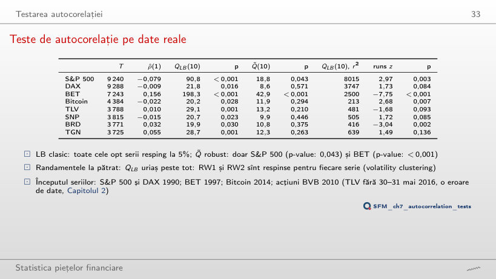
Teste pe randamentele zilnice (p-value sub 0,05 cu roșu)
Exemplu lucrat: QLB și Q̃ pe date reale
Răspuns
Doar pentru BET (Q̃(30) = 67,9 > 43,77). S&P 500 nu mai respinge: Q̃(30) = 39,7, pentru că autocorelația lui de la lagul 1 se diluează printre 29 de laguri aproape nule; slide-ul spune același lucru: un m mai mare diluează un efect de scurtă durată. QLB clasic respinge la m = 30 pentru cinci serii, cu o distribuție χ² care nu ține seama de volatility clustering.
Testul runs
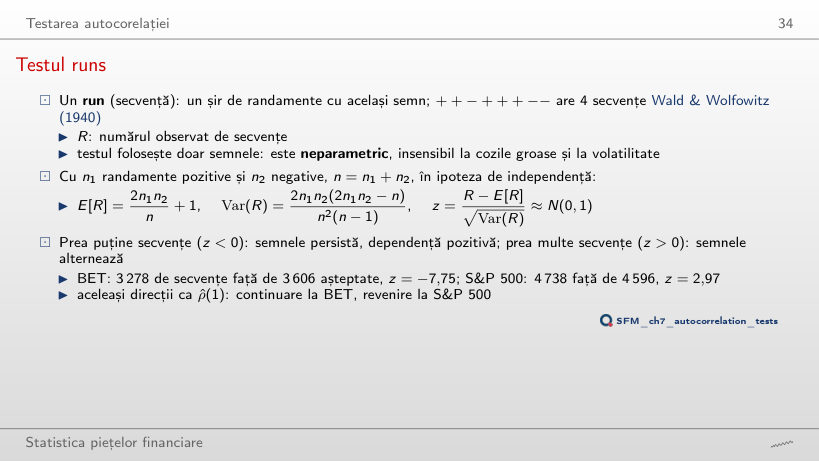
Exemplu lucrat: testul runs
Răspuns
Doar cea a BET, mult mai slabă: z = −2,03, față de 0,06 pentru S&P 500. Semnele BET persistă și în anii recenți, dar mult mai puțin decît pe tot eșantionul; la S&P 500 alternanța semnelor dispare. Din 2022, BRD are z = −3,79.
Rădăcini unitare: prețuri față de randamente
Importanța practică: regresia falsă
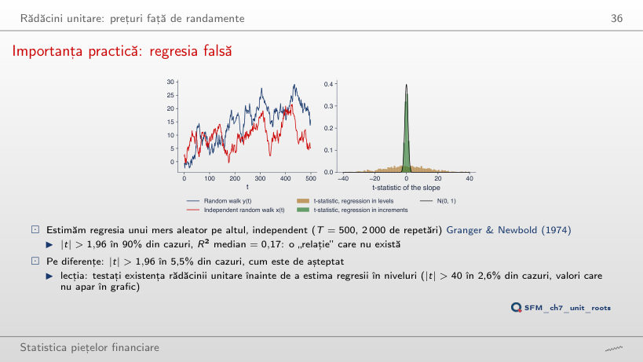
Răspuns
Nu, crește: 92,7% la T = 1 000 și 94,5% la T = 2 000 (77,3% la T = 100); |t| > 40 apare în 21,6% din regresii la T = 2 000. În regresia în niveluri, statistica t crește odată cu T, deci mai multe date fac relația falsă mai convingătoare. R² median rămîne între 0,16 și 0,18. Pe diferențe, proporția rămîne între 5,1% și 6,0% pentru orice T.
Testul augmentat și un exemplu lucrat
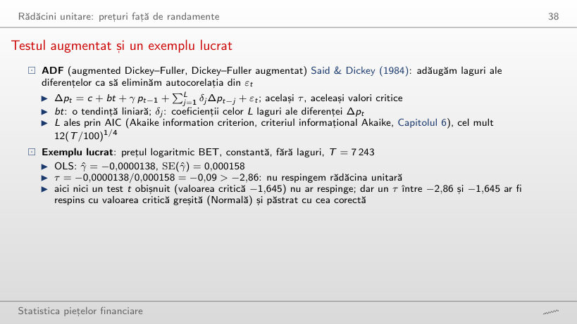
Exemplu lucrat: regresia Dickey–Fuller
Răspuns
Nu. Cel mai mic τ cu constantă este −1,41 (Bitcoin, L = 20), departe de −2,86; pentru TLV, SNP, BRD și TGN τ este chiar pozitiv. Prețurile cresc în timp, deci specificația potrivită are constantă și tendință: cu ea, TLV coboară sub −3,41 la 12 din cele 16 valori ale lui L (τ = −3,46 la L = 20, ordinul ales de AIC).
BET: prețul logaritmic și randamentele
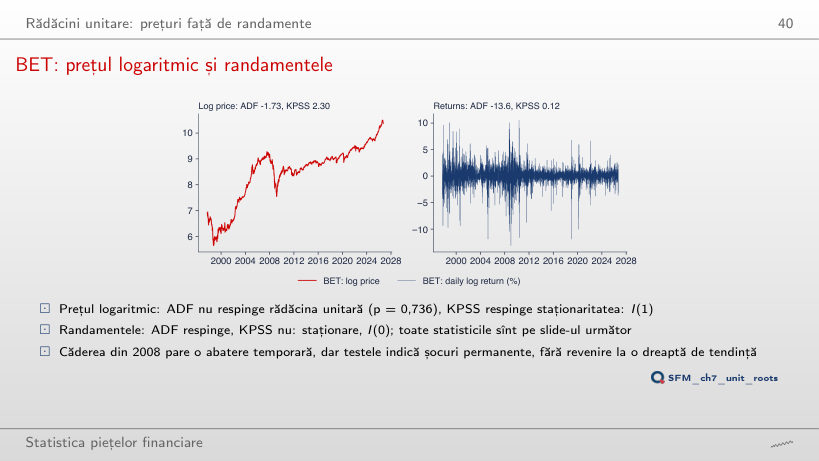
Răspuns
TLV: ADF = −3,46 < −3,41 (p = 0,044) respinge rădăcina unitară, iar KPSS = 0,57 > 0,146 respinge staționaritatea în jurul tendinței. Testele se contrazic: un caz neconcludent, nu o dovadă de revenire la tendință. Pentru celelalte șapte serii ADF nu respinge și KPSS respinge. Randamentele sînt I(0) pentru toate cele opt.
Teste de rădăcină unitară pe prețuri și randamente
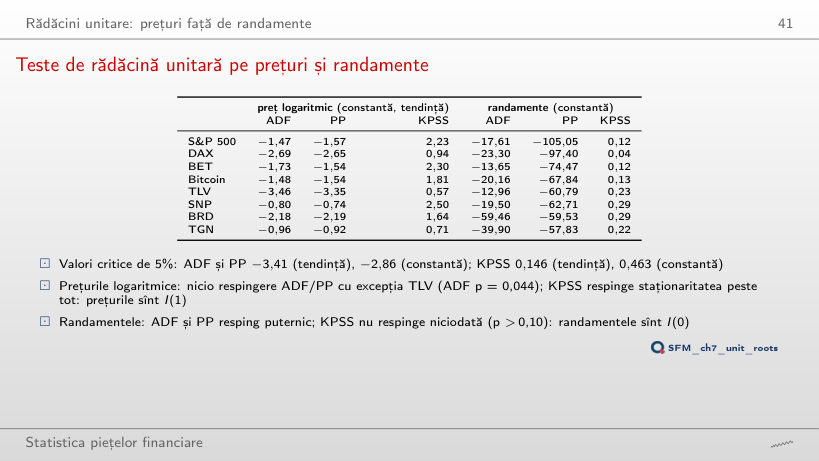
Statistici de test (cu roșu: respingere la 5%)
Exemplu lucrat: statistica KPSS pe prețul logaritmic
Răspuns
86,0. Un preț integrat are autocovarianțe mari și pozitive; fără ele, λ̂² este doar varianța reziduurilor și subestimează de zeci de ori varianța pe termen lung. Statistica scade cînd l crește, dar la l = 80 este încă 1,09 > 0,146. Pe randamente, KPSS rămîne sub 0,463 pentru orice l: concluzia I(1) pentru prețuri și I(0) pentru randamente nu depinde de lățimea de bandă.
Testul variance ratio
Exemplu lucrat: VR din ACF-ul S&P 500
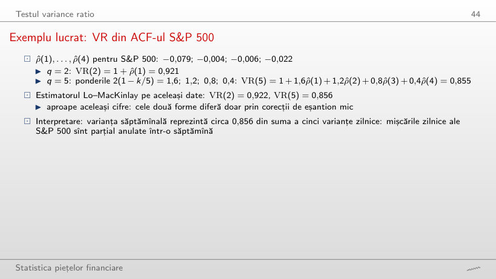
Exemplu lucrat: VR din ACF
Răspuns
Foarte puțin: 0,768 din ACF și 0,767 cu estimatorul Lo–MacKinlay, o diferență de 0,0005. Pentru BET, la q = 20: 1,514 și 1,517. Cele două forme diferă doar prin corecțiile de eșantion mic, care contează puțin cu T = 9 240 și q = 20.
Lo și MacKinlay (1988): estimator și teste
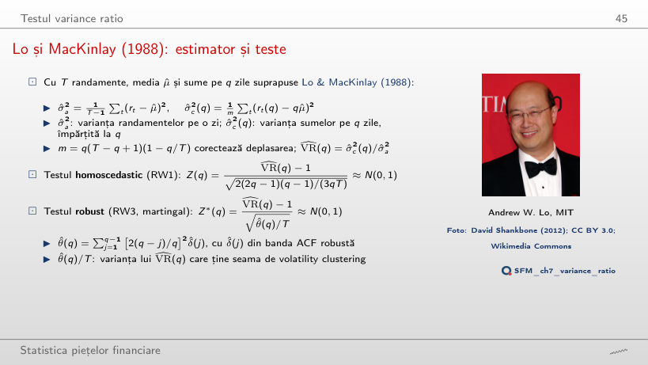
Exemplu lucrat: Z(q) și Z*(q)
Răspuns
Nu: Z*(40) = −1,81, deși Z(40) = −3,70 respinge încă. La q = 40, Z* respinge doar pentru BET. Raportul Z/Z* rămîne între 2,0 și 2,3 la toate orizonturile: volatility clustering dublează abaterea standard a lui VR(q) estimat, iar Z(q) nu ține seama de ea.
Necesitatea testului robust: o verificare Monte Carlo
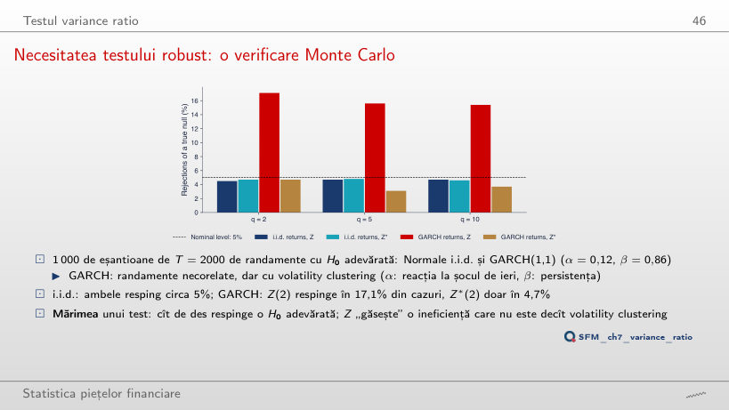
Răspuns
În 9,0% din cazuri; la α = 0,06 în 6,2%, la α = 0 în 4,8%. Distorsiunea crește repede cînd α + β se apropie de 1 (0,95 la α = 0,09, 0,98 la α = 0,12), pentru că volatilitatea devine foarte persistentă. Z*(2) rămîne între 4,3% și 4,9% pentru toate valorile lui α.
Rapoarte ale varianțelor pentru orizonturi de 2–40 de zile
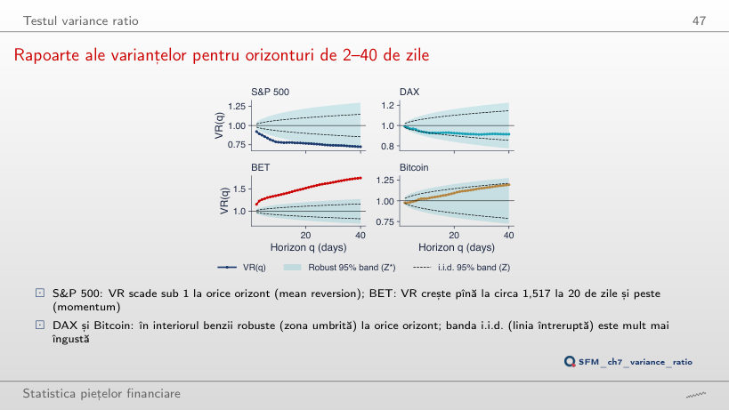
Răspuns
Nu: VR(40) al BET scade la 1,193 și niciun Z*(q) nu depășește 1,96. Momentumul BET vine din primii ani (1997–2006, ρ̂(1) = 0,270). S&P 500 respinge din 2010 la un singur orizont din 39, cu VR(40) = 0,663, sub valoarea din 1990: revenirea la medie rămîne, dar banda robustă se lărgește odată cu eșantionul mai scurt.
Rapoarte ale varianțelor și teste robuste
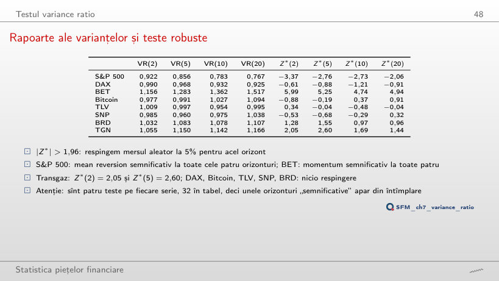
Răspuns
Trei: S&P 500 la q = 2 și Transgaz la q = 2 și 5 (pentru Transgaz eșantionul începe oricum în 2010). BET nu mai respinge la niciun orizont. Cu statistica homoscedastică Z ar fi 13, pentru că Z ignoră volatility clustering. La 32 de teste independente la 5% ne-am aștepta în medie la 1,6 respingeri false.
Teste comune și automate pe date reale
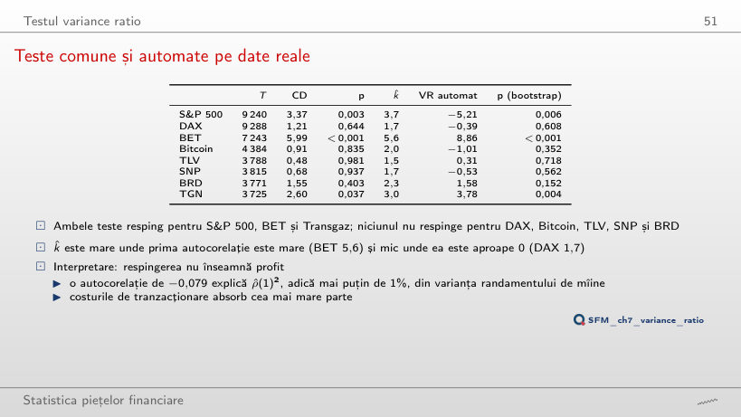
Exemplu lucrat: testul Chow–Denning
Exemplu lucrat: testul VR automat
Răspuns
S&P 500 și BET. Valoarea critică crește la 3,00, iar Transgaz, cu CD = 2,77, nu o mai depășește. Mai multe orizonturi înseamnă mai multe ocazii pentru o respingere falsă, deci un prag mai mare; CD crește doar dacă orizonturile adăugate au un |Z*| mai mare.
Eficiența pe piețe și în timp
Șaisprezece piețe în ultimii zece ani
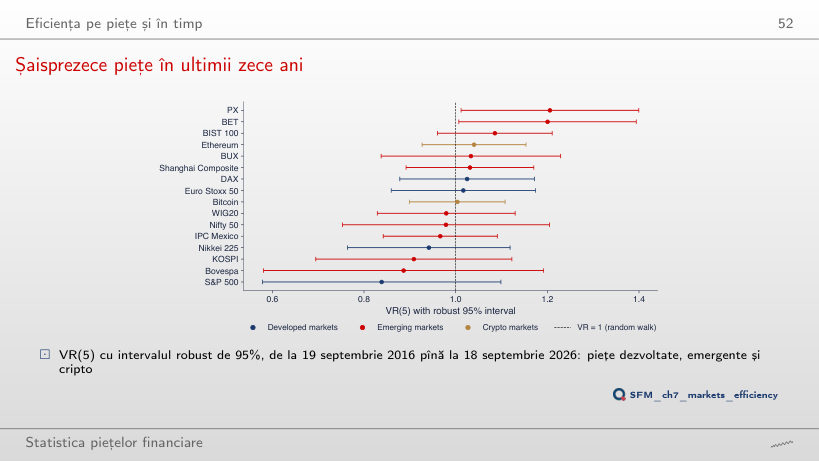
Răspuns
Doar Ethereum (VR(20) = 1,29, Z* = 2,45); PX și BET revin în interval. La q = 2 este S&P 500 (VR(2) = 0,86, Z* = −2,33). Fiecare orizont arată altă piață: cu 16 piețe și multe orizonturi, unele intervale exclud 1 din întîmplare, iar testul Chow–Denning pe patru orizonturi nu respinge pentru nicio piață.
Rapoarte ale varianțelor pe ferestre mobile
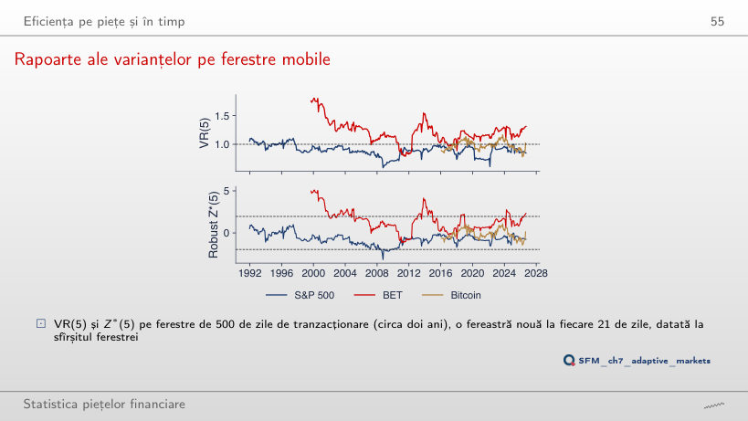
Răspuns
Crește la 20%, toate cu VR < 1. O fereastră lungă estimează mai precis aceeași autocorelație negativă mică, deci o separă mai ușor de zero; la 250 de zile ponderea este 1,6%. Ferestrele consecutive au în comun 1 479 din 1 500 de zile, deci ponderea descrie datele, nu este un test.
Trei subperioade pentru fiecare piață
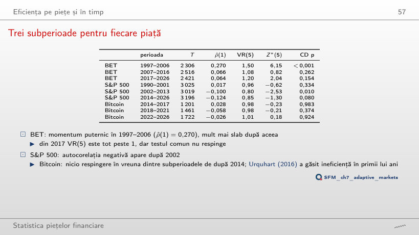
Răspuns
Niciuna: Z*(20) = −1,33, −1,54 și −0,91, deși VR(20) = 0,72 în 2002–2013, mai departe de 1 decît VR(5) = 0,80. Varianța lui VR(q) crește cu q, iar cu circa 3 000 de zile pe subperioadă intervalul robust devine larg. Doar BET 1997–2006 respinge la q = 20 (Z*(20) = 5,14).
Forma semi-tare, forma tare și anomalii
Randamentele pe zile ale săptămînii: S&P 500 și BET
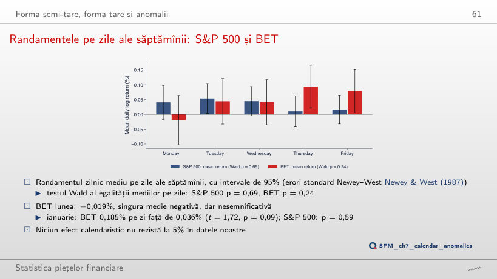
Exemplu lucrat: efectul ianuarie
Răspuns
Nu: cel mai mic este 0,088, pentru eșantionul care începe în 2016; S&P 500 rămîne peste 0,62. Încercarea a 17 începuturi diferite este ea însăși o căutare repetată în date: chiar un p sub 0,05 la unul dintre ele nu ar fi o dovadă a unui efect de zi a săptămînii.
Randamente logaritmice zilnice, în %: S&P 500 și DAX din ianuarie 1990, BET din septembrie 1997, Bitcoin din septembrie 2014 (7 zile pe săptămînă), Banca Transilvania (TLV), OMV Petrom (SNP), BRD și Transgaz (TGN) din 2010, din prețul ajustat, pînă la 18 septembrie 2026; cele două zile greșite ale TLV din mai 2016 sînt eliminate. Comparația între piețe: 16 indici și criptomonede, 19 septembrie 2016 – 18 septembrie 2026. Prețuri de închidere EODHD. Mersurile aleatoare simulate, zgomotul alb, traiectoriile ARMA, regresiile false, simularea mărimii testelor Z și Z*, ordinele de lag ADF alese prin AIC și p-value-urile wild bootstrap sînt cele din curs (același cod, aceeași sămînță a generatorului); autocorelațiile, testele portmanteau și runs, regresiile Dickey–Fuller, PP, KPSS, rapoartele varianțelor, testul Chow–Denning, testul VR automat, ferestrele mobile, subperioadele și regresiile calendaristice sînt recalculate în browser din aceleași date. Alte lungimi T ale regresiei false, alte valori α ale simulării GARCH, alte lățimi de bandă, laguri, orizonturi și începuturi ale eșantionului sînt rulări suplimentare ale aceluiași cod.